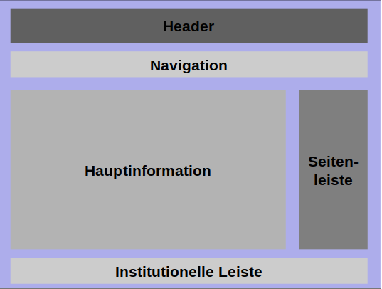

HTML5 Layouting und Einführung in Bootstrap
MMWP2024 - LV02
Inhaltsverzeichnis
Inhaltsschwerpunkte
- Historische HTML-Layouts
- HTML5 Layout-Modelle
- CSS3 Stylings
- Einführung in Bootstrap5
Voraussetzung
Der Ausgangspunkt dieser Vorlesungsreihe ist das Wissen in klassischer Webprogrammierung
- HTML 4.01, XHTML 1.0 – Programmierung statischer Webseiten mit Medien
- CSS 2.0 – Kaskade der CSS-Anweisungen, Boxenmodell (Standard), klassischer div-Boxen-Programmierstil
- JavaScript – DOM-Modell, AJAX-Methoden, Reaktion auf Nutzerinteraktionen, Manipulations-möglichkeiten von HTML-Dokumenten im Browser
Ziele von modernen Webdesigns
- Neue Herangehensweisen an klassische Webprogrammierung aufzeigen
- Dabei sollen die in HTML5, HTML5 APIs, CSS 3 und JavaScript-Frameworks auftauchenden neuen Programmiermöglichkeiten in wesentlichen Elementen mit eingeführt werden
- Vorstellung aktueller Browserkompatibilitäten bei HTML5 Elementen und CSS-Regeln
Herangehensweise
- Egal, ob künstlerisches Design der Website oder strikt rechteckiges, lückenloses Boxendesign – am Anfang steht eine Vorstellung von der zukünftigen Flächenaufteilung der Webseiten
- Weiterhin ist entscheidend, ob man zuerst für Smartphones und kleine Bildschirme entwirft, oder zuerst für Desktops und Netbooks
- Beachtung der Mobile-First-Regel, falls die geplante Webseite von Suchmaschinen gut bewertet werden soll
- Beachtung von verschiedenen Bildgrößen Mithilfe von Responsive- bzw. Fluid Design
Table-Layout - 1
"Früher" wurden Webseiten über Tabellen aufgebaut, um somit verschiedene Reihen und Spalten zu ermöglichen
Table-Layout - 2
Erst wurden Webseiten über Tabellen aufgebaut, um somit verschiedene Reihen und Spalten zu ermöglichen
<table width="100%" style="height: 100%;" cellpadding="10" cellspacing="0" border="0">
<tr>
<!-- ============ HEADER SECTION ============== -->
<td colspan="3" style="height: 100px;" bgcolor="#777d6a"><h1>Website Logo</h1></td></tr>
<tr>
<!-- ============ LEFT COLUMN (MENU) ============== -->
<td width="20%" valign="top" bgcolor="#999f8e">
<a href="#">Menu link</a><br>
<a href="#">Menu link</a><br>
<a href="#">Menu link</a><br>
<a href="#">Menu link</a><br>
<a href="#">Menu link</a>
</td>
<!-- ============ MIDDLE COLUMN (CONTENT) ============== -->
<td width="55%" valign="top" bgcolor="#d2d8c7">
</td>
<td width="25%" valign="top" bgcolor="#999f8e"> </td>
</tr>
<!-- ============ FOOTER SECTION ============== -->
<tr><td colspan="3" align="center" height="20" bgcolor="#777d6a">Copyright ©</td></tr>
</table>
Einfache HTML Seite ohne Styling
<!DOCTYPE html>
<html lang="de">
<head>
<meta charset="utf-8">
<meta name="Beschreibung" content="HTML5-Beispiel">
<meta name="keywords" content="HTML5, CSS3, JS">
<title>Dieser Text ist der Dokumenttitel </title>
</head>
<body>
<div id="#wrapper">
<div id="main_header">
<h1>Dies ist der Haupttitel der Website</h1>
</div>
<div id="main_menu">
<ul>
<li>Start</li>
<li>Fotos</li>
<li>Videos</li>
<li>Kontakt</li>
</ul>
</div>
<div id="container">
<div id="main_section">
<div>
<h1>Titel von Beitrag eins</h1>
<h2>Untertitel von Beitrag eins</h2>
<p>erschienen am 10.12.2016</p>
</div>
Dies ist der Text meines ersten Beitrags
<div>
<p>Kommentare (0)</p>
</div>
</div>
<div>
<div>
<div>
<h1>Titel von Beitrag eins</h1>
<h2>Untertitel von Beitrag eins</h2>
<p>erschienen am 10.12.2016</p>
</div>
Dies ist der Text meines ersten Beitrags
<div>
<p>Kommentare (0)</p>
</div>
</div>
<div>....</div>
</div>
<div id="main_aside">
<blockquote>Artikel Nummer eins</blockquote>
<blockquote>Artikel Nummer zwei</blockquote>
</div>
<div id="main_footer">
Copyright © Sybex, J.D. Gauchat, 2012-2013
</div>
</div>
</div>
</body>
</html>
Source
Layout mit klassischen Boxen - 1
- Darauf folgend wurden neue Möglichkeiten von Inhaltsplatzierung definiert (2009)
display: box; - Das klassische Boxenmodell berechnet den Platz für den Inhalt einer div-Box nach width, height
- Die Maße für Padding, Border und Margin kommen als realer Platzbedarf im Bild dazu
Layout mit klassischen Boxen - 2
Layout mit klassischen Boxen - 3
-
Um dem Boxenmodell generell konsistente Maße für
margin und padding geben zu können, werden Reset-Rules in der CSS-Datei empfohlen:
* { margin: 0px; padding: 0px; } - Weitere Reset-Rules rules können für gleichmäßigere Anzeige von Webseiten auf verschiedenen Browser benutzt werden (Quelle)
Layout mit klassischen Boxen - 4
-
Manchmal ist es gewünscht, auf überbreiten
Bildschirmen (16x10) mit einer Maximalbreite
der Website zu arbeiten, und diese dann zu
zentrieren
body {text-align: center } - Für die flächige Anordnung der div-Boxen ist es mitunter erforderlich, Gruppen von Boxen mit unsichtbaren Wrapper-div-Boxen zu kapseln
Layout mit klassischen Boxen - 5
- So wird alles in <body> mit <div id="wrapper"> umgeben:
#wrapper { width: 960px;
margin: 15px auto;
text-align: left }
- Der margin-Befehl wirkt auf Blockelemente und bewirkt deren Zentrierung. Der text-align-Befehl hebt den Befehl zu "<body>" wieder auf, für alle inneren Folgeelemente
Static Box-Layout - 1
Static Box-Layout - 2
* {
margin: 0px;
padding: 0px;
}
h1 {
font: bold 20px verdana, sans-serif;
}
h2 {
font: bold 14px verdana, sans-serif;
}
header, section, footer, aside, nav, article, figure, figcaption, hgroup{
display: block;
}
body {
text-align: center;
}
#wrapper {
width: 960px;
margin: 15px auto;
text-align: left;
}
#main_header {
background: #FFFBB9;
border: 1px solid #999999;
padding: 20px;
}
#main_menu {
background: #CCCCCC;
padding: 5px 15px;
}
#main_menu li {
display: inline-block;
list-style: none;
padding: 5px;
font: bold 14px verdana, sans-serif;
}
#main_section {
float: left;
width: 660px;
margin: 20px;
}
#main_aside {
float: left;
width: 220px;
margin: 20px 0px;
padding: 20px;
background: #CCCCCC;
}
#main_footer {
clear: both;
text-align: center;
padding: 20px;
border-top: 2px solid #999999;
}
Source
Probleme des klassischen Boxen-Modells - 1
- Größe der Boxen lässt sich schlecht auf verschiedenen Bildgrößen berechnen
- Abstände zu anderen Boxen können von Box zu Box verschieden sein und beeinträchtigen die Positionierung
Probleme des klassischen Boxen-Modells - 2
"Neue" Möglichkeiten von Webelementen in HTML5
- Barrierefreiheit-Regeln wurden als Standard ausgearbeitet
- Anpassbarer Inhalt an die Gerätegröße
- Auflösung (1920x1080)
- Pixeldichte (Pixel density)
- Farbunterstützung (LCD, OLED, LED, HDRI)
- Mobile Geräte benötigen andere Layouts und Funktionen (z.B. Touch-Navigation)
Die HTML5 Spezifikation
- Grundsätzlich werden die Standards für den deklarativen Teil von HTML5 und für CSS3 von zwei Organisationen gesetzt:
- World Wide Web Consortium (W3C) - https://www.w3.org
Ziel: fortsetzende Spezifikation von HTML5 und CSS3 - Web Hypertext Application Technology Working Group
(WHATWG) – https://www.whatwg.org
Ziel: Eine fortwährende Standardisierung dessen propagieren, was sich mittlerweile unter der Bezeichnung „HTML5“ etabliert hat (z.B. Browser-APIs)
- World Wide Web Consortium (W3C) - https://www.w3.org
- Es werden stetig neue Proposals veröffentlicht: https://html.spec.whatwg.org/
Kontextbezogene (Semantische) HTML5 Elemente
<article> Definiert einen unabhängigen, in sich abgeschlossenen Inhalt.
<aside> Definiert einen Abschnitt mit zusätzlichen Informationen zum Inhalt, der sich um das seitliche Element herum befindet.
<bdi> Isoliert bidirektionalen Text (wenn eine Sprache mit Rechts-nach-Links-Direktionalität, wie Arabisch oder Hebräisch, in einer Reihe mit Links-nach-Rechts-Sprachen verwendet wird).
<details> Enthält zusätzliche Details, die der Benutzer öffnen und anzeigen kann.
<dialog> Gibt ein Dialogfeld oder Fenster an.
<figcaption>Fügt eine Beschriftung oder Erklärung zum Inhalt des <figure> Tags hinzu.
<figure> Legt einen in sich geschlossenen Inhalt fest.
<footer> Definiert die Fußzeile einer Webseite oder eines Abschnitts.
<header> Definiert eine Kopfzeile einer Seite oder eines Abschnitts.
<main> Gibt den Hauptinhalt eines Dokuments an.
<mark> Markiert einen Teil des Textes, der von Bedeutung ist.
<meter> Definiert eine skalare Messung im bekannten Bereich oder die grafische Darstellung einer Bruchzahl.
<nav> Definiert einen Block von Navigationslinks, entweder innerhalb des aktuellen Dokuments oder zu anderen Dokumenten.
<progress> Zeigt den Fortschritt der Aufgabe an (Fortschrittsbalken).
<rp> Definiert einen alternativen Text, der in den Browsern angezeigt wird, die den <ruby> Tag nicht unterstützen.
<rt> Fügt Anmerkungen am oberen und unteren Rand des Textes ein, die in den <ruby> Tag eingefügt werden.
<ruby> Definiert Furigana (auch Yomigana oder Ruby genannt), phonetische Hinweise in Japan und ostasiatischen Sprachen.
<section> Erzeugt eigenständige Abschnitte innerhalb einer Webseite, die logisch zusammenhängende Inhalte enthalten.
<summary> Definiert die sichtbare Überschrift für das Element <details>.
<time> Definiert eine für Menschen lesbare Zeit auf einer 24-Stunden-Uhr oder ein genaues Datum im Gregorianischen Kalender.
<wbr> Weist den Browser an, wo im Text ein Zeilenumbruch eingefügt werden kann.
Media Elemente
<audio> Zeigt die Variationen der gleichen Audiodatei an.
<embed> Wird als Container für externe Anwendungen, Multimedia und interaktive Inhalte verwendet, die der Browser nicht versteht.
<source> Definiert mehrere Medienressourcen in verschiedenen Formaten: Video, Audio oder Bild.
<track> Legt Textspuren für Medienelemente fest.
<video> Bettet Video in ein HTML-Dokument ein.
Weitere Elemente:
Formular:
<datalist> Creates a list of input options, predefined by the <input> tag.
<output> Defines a place for representing the result of a calculation performed by a script or user’s interaction with a form element (<form> tag).
Grafik:
<canvas> Defines an area on the web page, where we can create different objects, images, animations, photo compositions via scripts.
<svg> Draws scalable vector graphics.
Barrierefreiheit von Webseiten - 1
- Verbesserung der Zugänglichkeit von Webseiten, insbesondere von dynamischen Inhalten und Komponenten bei Webseiten
- Ajax, HTML, JavaScript und verwandten Technologien werden hierfür verwendet
- Seit März 2014 ist Accessible-Rich-Internet-Applications (ARIA) ein empfohlener Webstandard des World Wide Web Consortium (W3C)
Barrierefreiheit von Webseiten - 2
- Webseitensteuerungen und Inhaltsaktualisierungen sind für Nutzende mit Behinderungen oft nicht zugänglich, insbesondere für Nutzende mit Screen-Reader
- Zu kleine Schrift, oder fehlender Kontrast stellen auch Problem dar
- Erweiterung: Accessible Rich Internet Applications suite of web standards (WIA-ARIA)
Semantische Elemente im HTML5 - 1
- Statt reinem div-Boxen-Design sollen semantisch orientierte Elemente von HTML5 für die Hauptboxen im Quellcode eingesetzt werden
- Zusätzlich werden gleich „Landmark Roles“ nach WAI-ARIA mit eingebaut
- Screenreadern können „Landmark Roles“ als Orientierung dienen
Semantische Elemente im HTML5 - 2
- Chromium und Gecko-Browser ermöglichen automatisierte Screenreader-Navigation
- Landmark Roles werden von den Screenreadern JAWS, NVDA, ORCA, Chromevox, Window Eyes und VoiceOver verstanden, und via FireFox addon durch Tastaturnutzer
- Neuste Elemente für ARIA-Unterstützung
Grundsätzliche Regeln von ARIA - 1
- ARIA-Elemente sollten nicht verwenden werden, wenn die gewünschte Semantik durch die Verwendung eines nativen HTML-Elements oder -Attributs erreicht werden kann
- Es ist nicht ratsam, die Semantik von nativem HTML zu verändern, es sei denn, es gibt einen zwingenden Grund, dies zu tun
- Es ist zwingend erforderlich, dass alle interaktiven ARIA-Steuerelemente über die Tastatur bedient werden können
Grundsätzliche Regeln von ARIA - 2
- Es ist nicht ratsam, die Semantik zu entfernen oder fokussierbare Elemente zu verbergen
- Es ist zwingend erforderlich, dass allen interaktiven Elementen ein zugänglicher Name zugewiesen wird, der die Accessibility API verwendet
Semantik Elemente - 1
<body>
<header role="banner">
<h1>Dies ist der Haupttitel der Website</h1>
</header>
<nav role="navigation">
<ul>
<li>Start</li>
<li>Fotos</li>
<li>Videos</li>
<li>Kontakt</li>
</ul>
</nav>
</body>
Semantik Elemente - 2
<section role="main">
<article>
<header>
<h1>Titel von Beitrag eins</h1>
<h2>Untertitel von Beitrag eins</h2>
<p>erschienen am 10.12.2016</p>
</header>
<p>Dies ist der Text meines ersten Beitrags</p>
<footer>
<p>Kommentare (42)</p>
</footer>
</article>
</section>
Semantik Elemente - 3
<aside role="complementary">
<blockquote>Artikel Nummer eins</blockquote>
<blockquote>Artikel Nummer zwei</blockquote>
</aside>
<footer role="contentinfo"> Copyright © Sybex,
J.D. Gauchat, 2023-2024</footer>
Resultat nach Einfügen der semantischen Elemente
<!DOCTYPE html>
<html lang="de">
<head>
<meta charset="utf-8">
<meta name="viewport" content="width=device-width, initial-scale=1.0, maximum-scale=1.0, user-scalable=no">
<meta name="Beschreibung" content="HTML5-Beispiel">
<meta name="keywords" content="HTML5, CSS3, JS">
<title>Dieser Text ist der Dokumenttitel </title>
</head>
<body>
<header role="banner">
<h1>Dies ist der Haupttitel der Website</h1>
</header>
<nav role="navigation">
<ul>
<li>Start</li>
<li>Fotos</li>
<li>Videos</li>
<li>Kontakt</li>
</ul>
</nav>
<section role="main">
<article>
<header>
<hgroup>
<h1>Titel von Beitrag eins</h1>
<h2>Untertitel von Beitrag eins</h2>
</hgroup>
<time datetime="2012-12-10" pubdate>erschienen am 10.12.2012</time>
</header>
Dies ist der Text meines ersten Beitrags
<footer>
<p>Kommentare (0)</p>
</footer>
</article>
<article>
<header>
<hgroup>
<h1>Titel von Beitrag zwei</h1>
<h2>Untertitel von Beitrag zwei</h2>
</hgroup>
<time datetime="2012-12-15" pubdate>erschienen am 15.12.2012</time>
</header>
Dies ist der Text meines zweiten Beitrags
<footer>
<p>Kommentare (0)</p>
</footer>
</article>
</section>
</body>
</html>
Flex-Box-Layout - 1
- Das flexible Boxenmodell aus CSS3 geht im Gegensatz zum klassischen Boxenmodell davon aus, dass width für eine Box immer Inhaltsbreite+Padding+Border ist
- Die Margin bleibt als Platz zur nächsten Box ausgenommen
- Hier wird erstmalig deutlich, dass HTML5 und CSS3 hinter einfachen Befehlen in der Syntax komplexe Modelle verbirgt!
Flex-Box-Layout - 2

Flex-Box-Layout - 2

Flex-Box-Layout - 3
Nutzen von Flex-Boxen
- Damit sind Breitenangaben genauer, es muss nur noch auf die Werte für margin geachtet werden
- Die Angaben für padding und border beeinflussen nicht mehr globale Abstände
-
Zusammen mit der Einstellung des Viewports
Können Flexboxen besser genutzt werden: z.B.
Anwendung von Flex-Boxen
<div class="flex-container">
<div class="flex-item"></div>
<div class="flex-item"></div>
<div class="flex-item"></div>
<div class="flex-item"></div>
</div>
.flex-container {
display: flex;
flex-direction: row; /* Standardwert */
}
Layout mit flexiblen Boxen
Einführung in das flexbox modellBrowser support
Flexboxen-Einsatz im Beispiel
body {
width: 100%;
display: -ms-flex;
display: -webkit-flex;
display: -moz-flex;
display: flex;
-ms-flex-direction: column;
-webkit-flex-direction: column;
-moz-flex-direction: column;
flex-direction: column;
-ms-justify-content: flex-start;
-webkit-justify-content: flex-start;
-moz-justify-content: flex-start;
justify-content: flex-start;
-ms-align-items: center;
-webkit-align-items: center;
-moz-align-items: center;
align-items: center;
}
#wrapper{
max-width: 960px;
margin: 15px 0;
display: -ms-flex;
display: -webkit-flex;
display: -moz-flex;
display: flex;
-ms-flex-direction: column;
-webkit-flex-direction: column;
-moz-flex-direction: column;
flex-direction: column;
-ms-justify-content: flex-start;
-webkit-justify-content: flex-start;
-moz-justify-content: flex-start;
justify-content: flex-start;
-ms-align-items: stretch;
-webkit-align-items: stretch;
-moz-align-items: stretch;
align-items: stretch;
}
#main_header {
background: #FFFBB9;
border: 1px solid #999999;
padding: 20px;
-ms-flex-grow: 0;
-webkit-flex-grow: 0;
-moz-flex-grow: 0;
flex-grow: 0;
}
#main_menu {
background: #CCCCCC;
padding: 5px 15px;
-ms-flex-grow: 0;
-webkit-flex-grow: 0;
-moz-flex-grow: 0;
flex-grow: 0;
}
#main_menu li {
display: inline-block;
list-style: none;
padding: 5px;
font: bold 14px verdana, sans-serif;
}
#container {
display: -ms-flex;
display: -webkit-flex;
display: -moz-flex;
display: flex;
-ms-flex-direction: row;
-webkit-flex-direction: row;
-moz-flex-direction: row;
flex-direction: row;
-ms-justify-content: flex-start;
-webkit-justify-content: flex-start;
-moz-justify-content: flex-start;
justify-content: flex-start;
-ms-align-items: stretch;
-webkit-align-items: stretch;
-moz-align-items: stretch;
align-items: stretch;
}
#main_section {
-ms-flex-grow: 1;
-webkit-flex-grow: 1;
-moz-flex-grow: 1;
flex-grow: 1;
min-width: 200px;
margin: 20px;
}
#main_aside {
width: 220px;
margin: 20px 0;
padding: 20px;
background: #CCCCCC;
-ms-flex-grow: 0;
-webkit-flex-grow: 0;
-moz-flex-grow: 0;
flex-grow: 0;
}
#main_footer {
text-align: center;
padding: 20px;
border-top: 2px solid #999999;
-ms-flex-grow: 0;
-webkit-flex-grow: 0;
-moz-flex-grow: 0;
flex-grow: 0;
}
article {
background: #FFFBCC;
border: 1px solid #999999;
padding: 20px;
margin-bottom: 15px;
}
time {
color: #999999;
}
article footer {
text-align: right;
}
figcaption {
font: italic 14px verdana, sans-serif;
}
Beispielseite mit FlexBoxen
Flex-Boxen Einstellungen - 1
- Entscheidend für das Verständnis ist, dass es Eigenschaften für Eltern-Boxen und Eigenschaften für Kind-Boxen gibt
- Jede Box kann beide Rollen zugleich haben, die Eigenschaften gelten aber immer für eine Eltern-Box mit ihren Kind-Boxen
- (Die Begriffe „Eltern“ und „Kind“ kommen aus der SGML-/XML-Hierarchie im DOM-Modell)
Flex-Boxen Einstellungen - 2
- Das Flexbox-Modell hat kein unterlegtes Grid, es werden nur Zeilen oder Spalten initial als Orientierung festgelegt (main axis)
- Um bei flexiblem Maß in der Breite (row-Stil) eine Mindest-/Maximalbreite der Kindboxen zu garantieren, sind die CSS-Eigenschaften min-width bzw. max-width zu benutzen
- Es geht aber einfacher: ein Grid in der Richtung der cross-axis
Grid-Layout
<div class="container">
<div>Element 1</div>
<div>Element 2</div>
…
<div>Element 11</div>
<div>Element 12</div>
</div>
container {
display: grid;
grid-template-rows:200px 1fr 100px;
grid-template-columns:25% 25% 25% 25%;
}
Grid-Layout
Browser support
Einbinden von Bildern in Flex/Grid-Boxen - 1
- alt und role sind für Screenreader und nicht mehr existierende Bilder nützlich
- alt sollte immer verwendet werden
- Es können mehrere Bilder aufgezählt werden
- Die Bildunterschrift passt sich der Gesamtbreite zentriert an
- Weitere Elemente werden in späteren Veranstaltungen behandelt
<figure>
<img src="shib.jpg" alt="Much Shib, very Dog, Such Pumpkin" role="img"/>
<figcaption>
Dies ist ein Bild des ersten Beitrags,
<a href="https://happygoriley.tumblr.com/" target="_blank">Quelle</a>
</figcaption>
</figure>
Einbinden von Bildern in Flex/Grid-Boxen - 2
Grundseite mit Flexbox und BildEinbinden von Videos in Flex/Grid-Boxen - 1
- Es können mehrere Videoformate (sources) aufgezählt werden
- Metadata, wie Untertitel können (asynchron) vorab geladen werden
- Hinweistext, oder Video beschreibungen, wenn Videoformate nicht unterstützt werden
- Weitere Elemente werden in späteren Veranstaltungen behandelt
<video preload="metadata" controls="" poster="../images/vl2/shib.jpg" data-video-type="video">
<source src="../images/vl2/sample.mp4" type="video/mp4">
<source src="../images/vl2/sample.mkv" type="video/mkv">
<source src="../images/vl2/sample.vid" type="video/vid">
<div class="fallback"> Your browser is not able to display this video.</div>
</video>
Einbinden von Videos in Flex/Grid-Boxen - 2
Grundseite mit Flexbox und VideoFlexboxen und Grid-Design
- Viele Webseiten verwenden Flexboxen oder basieren auf Grids
- Frameworks wie Bootstrap bauen auf diesen Designs auf
- Zusammen mit Javascript ergibt sich eine responsive Webseite mit möglichen Interaktionen
Bootstrap 5 als Programmierhilfe für responsive Webseiten
- Bootstrap ist eine leistungsstarke, funktionsreiche Bibliothek
- Es basiert auf HTML5, CSS3 und JS
- Bootstrap benutzt hauptsächlich Flexboxen als Layout
- Einbindung der CSS-Datei sowie JS-Datei reicht aus, um alle Funktionen nutzen zu können
- Schritt-für-Schritt-Anleitung
Bootstrap 5 Browserunterstützung
- Bootstrap funktioniert auf allen modernen DesktopBrowsern
- Auch Browser auf Mobilegeräten (Chrome, Firefox, Safari) werden unterstützt
- Quelle
- CSS-"Hacks" und Javascript-Funktionen helfen bei der Unterstützung von alten Browsern (z.B. Internet Explorer)
Bootstrap 5 Elemente
- Layout: Flex- und Grid-Elemente
- Content: Seiteninhalte z.B. Bilder und Texte
- Forms: Elemente rund um Formulare
- Components: Sammlung von nützlichen Elemente wie Pop-Ups, Gallery oder Buttons
- Helpers: HTML-Element-, Klassen- und Javascript-Sammlung wie Farben, Icon-Buttons und
- Utilities: Sammlung von CSS-Klassen und deren Erklärung
- (Neu) Icons: Sammlung von SVG-Icons (Ähnlich wie bei https://fontawesome.com/)
Bootstrap 5 Guides
Literatur
- J. D. Gauchat, „HTML5, CSS3 & JavaScript“, Sybex, 2013
- https://www.paulirish.com/2012/box-sizing-border-box-ftw/, 01.02.2012
- Ranjan, Alok, Abhilasha Sinha, and Ranjit Battewad. JavaScript for modern web development: building a web application using HTML, CSS, and JavaScript. BPB Publications, 2020.
- CSS-Framework KUBE, minimalistisch und effektiv, https://getbootstrap.com/ – Bootstrap 5
- CSS Flexible Box Layout Module Level 1, 25.09.2014, Working Draft des W3C: http://www.w3.org/TR/css-flexbox-1/
- A Complete Guide to Grid: https://css-tricks.com/snippets/css/complete-guide-grid/
Abspann
Zweites Level geschafft weitere Folgen!
Fragen und Feedback?